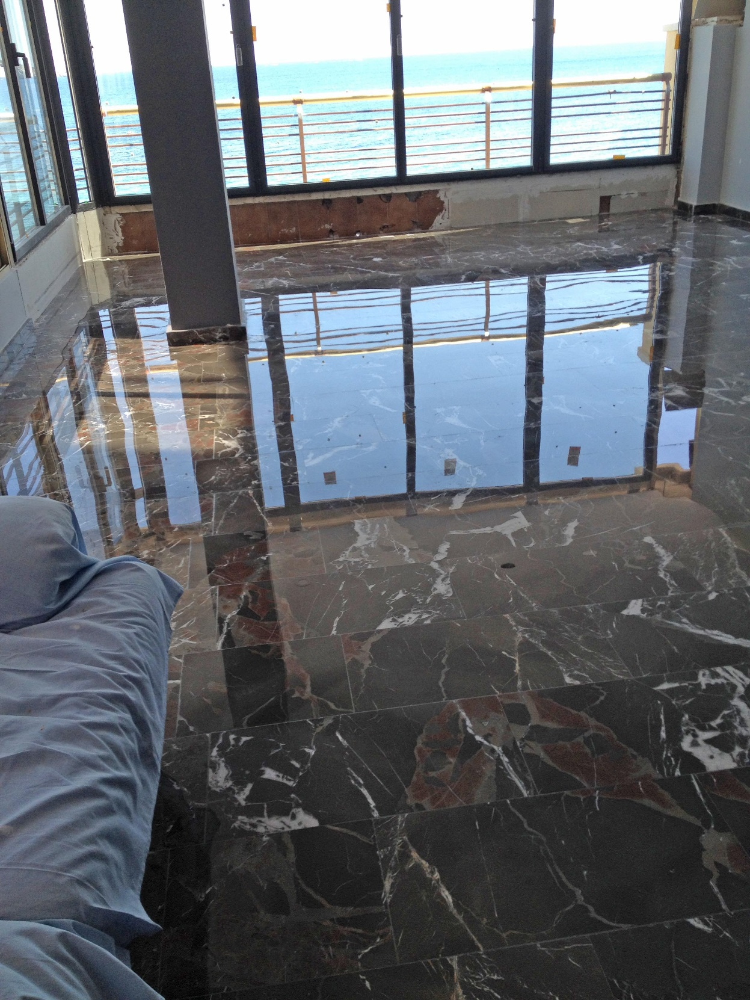

01 · Suelos y escaleras
Pulido y cristalizado de suelos y escaleras
Tratamientos orientados a recuperar brillo, uniformidad y mejor aspecto en pavimentos y escaleras. Ideal para superficies que requieren una mejora estética clara y un mantenimiento profesional.
- Acabado visual cuidado
- Tratamiento adaptado al tipo de suelo
- Intervenciones para hoteles, empresas y viviendas